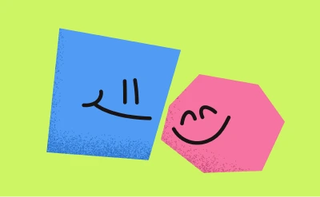
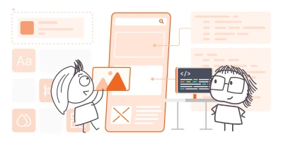
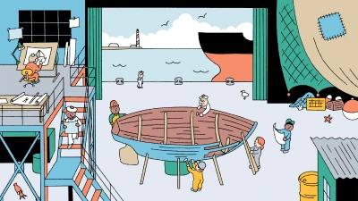
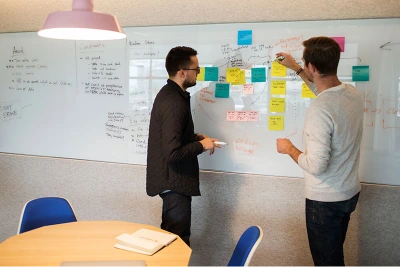
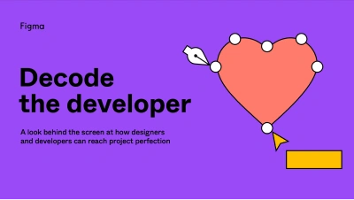

Working collaboratively with engineers
There is no one-size fits all here. The process is likely to differ for every project. However, a good knowledge of working with and developing design systems, combined with pragmatism around effort vs impact is likely to go a long way.
This page lists some good examples from successful product teams and examples of how you can use your design tools (read: Figma) to streamline design handover.
How Spotify's product team works

Learn how designers and engineers collaborate at Spotify: what works well, what can go wrong … and everything in between.
From monologues to dialogues—unlocking designer-developer collaboration
Does trying to understand a technical aspect of a project make your head spin? In this talk, you will learn about some communication tools that have helped me jump start work on highly technical projects and build rapport with engineers.
Figma Dev Mode and a good design system isn't a magic bullet for seamless design/developer collaboration. But it will certainly help.
What goes wrong with designer-developer collaboration? — new insights and solutions

Why is designer-developer collaboration such a pain point for teams? What are the root causes? What can we do about it?
Yes, it's a bit of a sales pitch for Zeplin. But the core messaging and reasons using a tool like Zeplin might help are sound.
The anatomy of a component sprint

The Washington Post’s inclusive process for creating new design system components bridges the gap between design and development to make features that help navigate the news online.
Questions to ask developers before you start designing

Written in 2016. This is a bit dated now but I can't find a better and up-to-date equivalent. The details of some of these questions should be updated to reflect modern web standards and technologies, but the underlying sentiment is very much still valid.
Figma tutorial: Collaboration and handoff in Dev Mode
Decode the developer

Decode the developer
A report from Figma looking at how designers and developers can work together to reach project perfection.